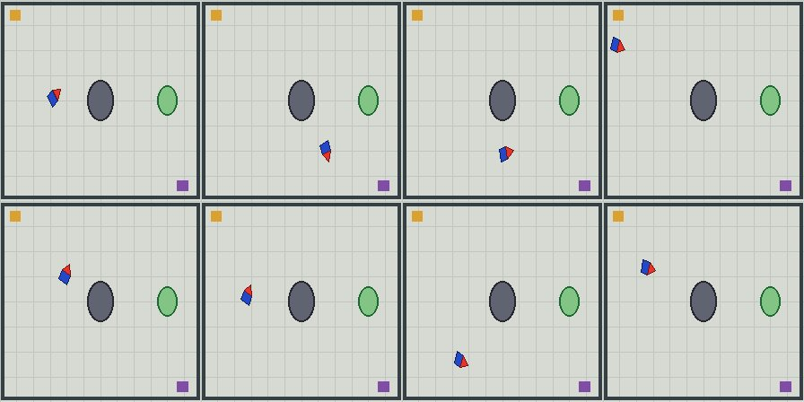
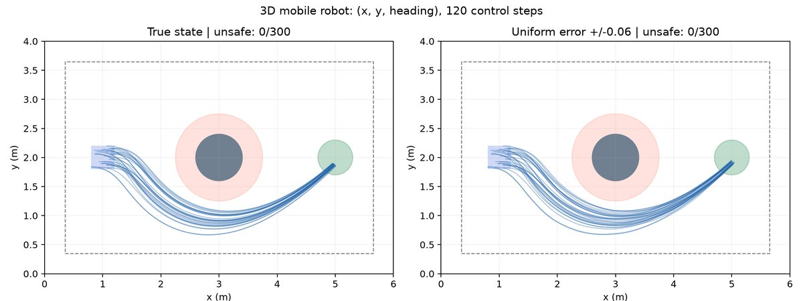
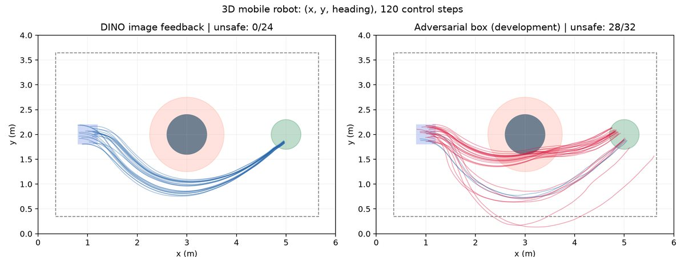

移动机器人：三维视觉实验
图像闭环跑通，但 CP 盒内有实际反例；完整 SBC 证书未通过。
图像任务跑通完整 SBC 证书未通过CP 盒内有实际反例3D 状态 / 2D 动作
24/24 开发图像闭环
安全到达并停稳；距障碍排除边界最小约 0.153 m
39/20 校准/留出轨迹
CP 半宽约 (0.0488,0.0488,0.3254)；留出覆盖 18/20
20/20 留出行为
安全到达并停稳；覆盖 90% 不等于 95% 测试通过
28/32 CP 盒内反例
21 条机器人/障碍物圆重叠；完整证书不成立
1. 任务与配置
状态
(x,y,θ)，3D；位置与朝向动作
线速度 + 角速度，2D；120 步，12 s
动力学
离散独轮车；dt=0.1；无障碍过程噪声
视觉
224×224 渲染图 → DINO ViT-S/14 patch → 空间注意力 → 3D 位姿
训练
2,400 张训练 / 400 验证 / 400 开发测试
控制器
PPO 直接输出双动作；无在线后备/过滤器
SBC
AEBS 同类非负网络；离线证书训练
CP
每条 120 步 ×3 坐标的最大残差；39 校准 / 20 留出
2. 一步一步
| 步 | 输入 | 处理 | 输出 / 结果 |
|---|---|---|---|
| 1. 场景 | 6×4 m 地图，中央障碍 | 渲染 224×224；机器人/障碍/目标/地图标记 | 2,400+400+400 图像 |
| 2. 观测 | DINO patch | 卷积 + 双空间注意力 → 3D 位姿 | x MAE 2.55 cm、y 1.86 cm、θ 4.49° |
| 3. PPO | 3D 观测 | 30 万步；宽初态 + 绕障距离奖励 | 名义 300/300；±0.03 停稳 275/300 |
| 4. 图像闭环 | 渲染图 → DINO → PPO | 24 条开发轨迹 | 24/24 安全到达并停稳 |
| 5. 轨迹 CP | 39 校准 + 20 留出 | max_t 三维归一化误差；冻结阈值 | 半宽约 (0.0488,0.0488,0.3254)；留出 18/20 |
| 6. SBC | 真实状态、CP 盒 | 非负网络训练 / 区间审查 | 初始 0.179、危险 20.807，但不增条件未通过 |
| 7. 反例 | CP 盒内扰动搜索 | 可微搜索 + float64 独立重放 | 28/32 违反；21 条圆重叠 |
3. 为什么不能继续只训 SBC
固定当前控制器、动力学和 CP 盒，已经找到盒内实际越界反例。若假设初始 B≤1、危险 B≥20、每步不增，沿该允许轨迹会推出 B≤1 且 B≥20，矛盾。因此不是训练轮数不够；需要改控制器/误差表示/加后备。
下一步：改进朝向识别；用状态相关/椭球/带相关性的误差集合；把反例用于控制器训练；改完后重新采集轨迹 CP。
4. 图像与轨迹



5. 保证与边界
- 已得到：三维任务、图像闭环开发成功、轨迹 CP、初始/危险区分离的神经候选。
- 未得到：完整 CP + 神经 SBC 概率安全保证。
- CP 盒内反例否定的是“对盒内所有误差”的充分条件，不否定 CP 覆盖定理，也不否定其他条件噪声模型。
- 数值区间，不是形式化浮点；不是实车。
完整专题 · 反例 JSON · 轨迹 CP JSON